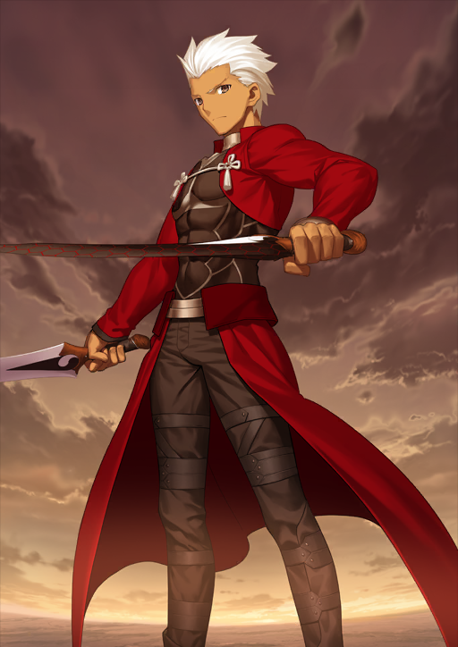

Archer (Nameless)
Class: Archer
Species: Human.
He originates from the beginning of the franchise, Fate/Stay Night. For the sake of spoilers, his true idenity will not be exposed.
Additonally, he is also summonable as Hakuno Kishinami's servant in Fate/Extra. One of the most mysterious servants.
Funnily enough, whenever Archer is summoned as a servant in any grail war, they always bemoan their luck, exclaiming to themselves "Why did I get such a snarky servant?!"
...This isn't without reason, however. Archer is just a really smug guy.
"Archer-class Servant. I have been summoned and come at your request."
